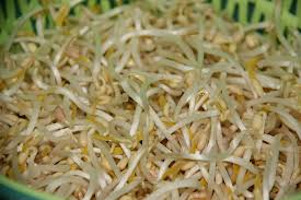

Mi Lista del Super
Verduras
1/4 col china
1 cebolla china
100gr de pasta wantan
100gr de frijol chino

1 kion
1 pimiento rojo
Extras
250gr fideo oriental
Carnes
250gr pechuga de pollo
250gr pechuga de pollo
Salsas
1 pomo de salsa de tamarindo
1 sillao
El reto es hacer una
sopa wantan
y un
tallarin saltado
en wok